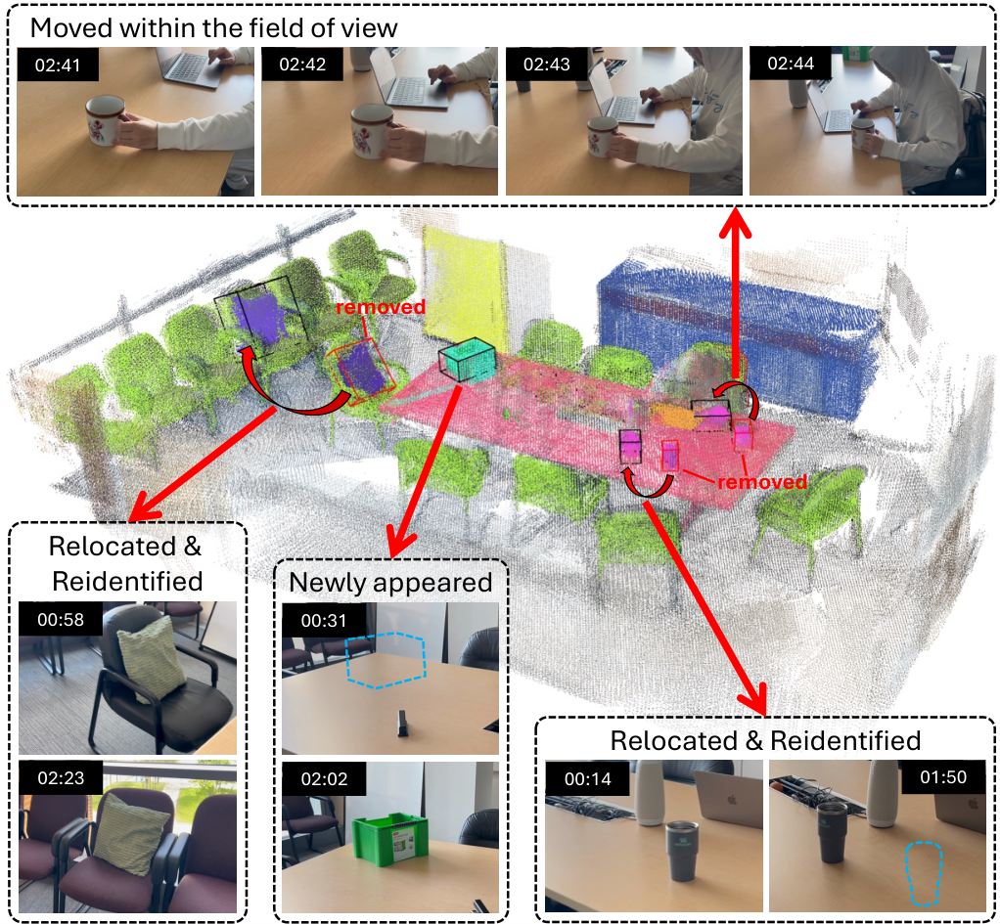

Paper Analysis
01 · From Append-Only Points to Revisable State
这篇工作针对的是在线开放词汇语义建图中的一个很具体的问题：点一旦被投影进对象实例，后续帧通常只继续追加，很少回头检查旧点。mask 边界误差、深度噪声和物体移动于是会留下永久的伪点。作者把对象地图写成一组实例，每个实例包含点集、每点置信度、标签直方图、CLIP/DINO 描述子、观测次数与最后时间戳。
它的核心不是把语义向量变得更大，而是让历史点拥有可被新证据降低的状态。这个视角对流式 reconstruction memory 有直接启发：历史条目需要同时记录证据强度和“多久没有被当前观测支持”，否则有限容量下无法淘汰过时内容。
Mechanism
02 · Point-Level Confidence Update
作者用 log-odds 表示点置信度。对对象 i 的第 j 个点，s_ij = log(c_ij/(1-c_ij))。新一帧不是简单覆盖，而是根据该点在当前视角中是否可见、是否落在检测 mask 内、深度是否一致，累加正或负证据。log-odds 让更新变成加法，也方便设定删除阈值。
可见性判断先区分“没有检测到是因为被遮挡/出视野”和“应该看见但与当前证据冲突”。因此未检测到不立即删除；只有在可见且不一致时才持续降低分数。实现中只对距离相近的局部实例做更新，避免每帧扫描整张地图。
s_ij = log(c_ij/(1-c_ij)); s_ij ← s_ij + Δ_visible/mask/depth
Paper Analysis
03 · Reading the Original Pipeline

Taimeng Fu et al. · Original figure, unmodified · arXiv perpetual non-exclusive license · Paper & Caption ↗
每帧输入 RGB-D。YOLO-World 给开放词汇检测，MobileSAM/FastSAM 生成实例 mask，MobileCLIP 与轻量 DINO 提取检索和重识别特征。检测先与已有实例关联；新点加入对应实例，旧点则经过 visibility reasoning 和置信度更新。周期性 fragment merging 合并由不连续观察造成的重复实例。
Figure 1 中的关键顺序是 detection → visibility → association → confidence update。它把“当前看到什么”和“过去哪个实例应该被修正”分开处理。对 LingBot-Map 的类比是：当前帧 token 先产生局部语义/几何证据，再由一个可学习或规则化的写入门决定历史 token 是增强、衰减、替换还是暂存。
Mechanism
04 · Tracking and Re-Identification
视野内运动使用 BoT-SORT 保持 tracking ID，旧位置残留点随后因与新深度冲突而在 1–2 帧内衰减。物体离开视野后重新出现，则用 CLIP/DINO 外观描述子和体积条件做 re-identification；匹配不唯一时保守地拒绝合并。
这说明语义向量在这里主要承担实例检索与身份连续性，而不是直接替代几何对应。对于同类物体，类别相似度只能生成候选，最终仍要结合空间、形状和可见性。
Inference
05 · Training-Free Online Memory and Downstream Use
该方法是在线地图更新管线，论文没有训练一个端到端几何网络来反向优化这些更新。语义检测、mask、深度和特征提取后，置信度通过规则/概率更新运行。地图还接入 VL-Nav：LLM 查询对象描述，地图返回最相似实例的空间元数据，再调用导航或探索技能。
因此它证明的是“可修正语义空间记忆对动态导航有用”，而非“语义反馈改善了 RGB-D 深度或相机位姿”。把这种更新迁移到 LingBot-Map 时，需要额外定义可微写入以及几何损失，否则收益只会停留在语义后处理。
Evidence
06 · Experimental Evidence and Limits
Replica 和 ScanNet 上，作者相对在线基线 DualMap 报告 mIoU 提升 3.46 和 2.55 个百分点，F-mIoU 提升 5.84 和 3.44，mAcc 提升 13.85 和 1.45。消融中去掉 point-level update 后 duplication 从 1.1690 增至 1.2568；再去掉 fragment merging 后增至 1.3426。模拟 mask 边界加入 σ=3 px 高斯噪声时，本文性能下降小于 DualMap。
动态场景实验中，作者报告原对象在移动后保留 100%，重新出现的对象中 76.9% 恢复原身份，并移除全部 26 个过时实例。解读这些数字时要注意：系统依赖 RGB-D、开放词汇分割和外观特征；地图对象目录也没有在本文中被证明具有固定总容量。
Transfer Analysis
07 · What Transfers to LingBot-Map
最直接的迁移是把 LingBot-Map 的历史条目从无条件 KV 改成带置信度的语义-几何证据：写入时保存语义向量、局部几何、观测时间和覆盖状态；读取时让当前 token 查询高置信且空间/外观一致的条目；长期未被支持的条目降低读取权重。
但不能直接照搬 log-odds 规则来宣称几何变好。要验证语义是否 guidance reconstruction，至少比较：原始 memory、只在输出端融合语义、语义参与写入并由后续几何 loss 训练。几何指标、边界完整度、轨迹和固定 memory 容量要同时报告。
Discussion
Reading Questions
question
answer
question
answer
question
answer
References
Figure 1 is reproduced from the authors' arXiv HTML page for scholarly explanation; the paper carries arXiv's perpetual non-exclusive license.
Verified on 2026-11-07. Paper results refer to the linked versions. Repository references were checked on this date.